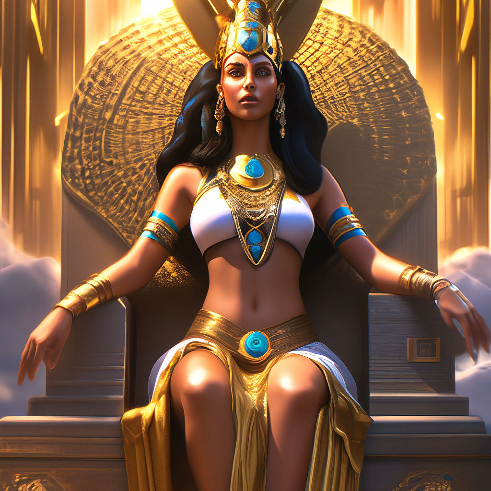

Мифология - это не просто собрание древних историй, это ключ к пониманию культуры, истории и души народа. Мифы отражают устремления, страхи, надежды и верования людей, живших за тысячи лет до нас.
Мифология древних народов, эволюция их воззрений - тема неисчерпаемая. Ведь миф - это не просто старинная сказка, а древнейший образ мировоззрения, позволяющий человеку осмыслить себя и окружающий мир.
Миф объединяет науку, религию и искусство. Легенды и сказки настолько глубоко укоренены в общественном сознании, что их воздействие на умы продолжается даже в нашем XXI веке!
Греческая мифология
При помощи мифов древние греки пытались объяснить все природные явления, представив их в образе живых существ. Сначала, испытывая сильный страх перед природными стихиями, люди изображали богов в ужасном зверином облике (Химера, Медуза Горгона, Сфинкс, Лернейская гидра).
Однако позднее боги становятся антропоморфными, то есть имеют человеческий облик и им присущи самые различные человеческие качества (ревность, щедрость, зависть, великодушие). Главным же отличием богов от людей являлось их бессмертие, но при всем своем величии боги общались с простыми смертными и даже вступали с ними нередко в любовные отношения, чтобы породить на земле целое племя героев.
Главные боги
Зевс — бог неба, грома и молнии, царь Олимпа.
Зевс является одним из самых известных древнегреческих богов и был высшим богом в греческой мифологии. Его роль в мифологии была огромной, и он часто представлялся как могущественный правитель небес и земли. Он также считался богом грома, молний и дождя, а его символами были орел, молния и дуб.
Одним из самых известных подвигов Зевса является его борьба с Титанами, которые пытались свергнуть олимпийских богов и захватить власть. Зевс во главе олимпийских богов встал на их пути и с помощью молний и громов уничтожил Титанов, за что получил прозвище "Громовержец".
Гера — царица богов, супруга громовержца Зевса и покровительница женщин.
Гера — древнегреческая олимпийская богиня, сестра и жена верховного бога Зевса, которая как и муж, повелевала громом и молниями. Греки считали ее покровительницей брака, домашнего очага и материнства, а замужние женщины просили у нее защиты. Согласно мифам, верховная богиня отличалась властным характером и ревностью (что совсем неудивительно, учитывая похождения Зевса). В римской мифологии Гера известна под именем Юнона.
О происхождении Геры ходило множество слухов и легенд. Наиболее популярный миф звучал примерно так: богиня была третьей дочерью титана Кроноса и Реи, вместе с остальными детьми она была проглочена собственным отцом. Кроносу предсказали свержение, да еще и от своего сына: обезумевший от страха титан стал пожирать всех своих детей. Незамеченным остался лишь Зевс, который сверг отца, а затем спас своих братьев и сестер. В будущем громовержец стал верховным богом Олимпа и мужем величественной Геры.
Посейдон — бог морей в древнегреческой мифологии, повелитель всех земных вод.
Покровитель океанов и морей представлялся как грозное божество с необузданным, бурным нравом, чей гнев способен вызвать землетрясение. Владыка морских вод, бог морей, раздражителен, строг и даже жесток. Развевающиеся волосы, резкие движения и дикий вид отличали Посейдона (Нептуна) от Зевса. Земля разверзалась от одного удара его трезубца. Чтобы умилостивить Посейдона, древние греки и римляне приносили жертвы.
Бог морей почитался всеми рыбаками, мореплавателями и купцами. Неслучайно главным атрибутом Посейдона (Нептуна) являлся трезубец – гарпун, с помощью которого убивали акул и китов. Легким взмахом он мог успокоить бушующие волны и ураган. Во имя бога воздвигались жертвенники, торговцы обращались к Посейдону (Нептуну) с мольбой об удачном плавании и выгодных сделках.
Афродита — в греческой мифологии богиня красоты и любви, включавшаяся в число двенадцати великих олимпийских богов.
Мы знаем Афродиту как древнегреческую богиню любви, красоты, и сексуальности. Она очаровывала как богов, так и людей, вовлекала их в запретные романы при помощи красоты и лести. Она родилась недалеко от Кипра из отрезанных гениталий бога неба Урана.
Но немногие знают, что Афродита была не просто богиней любви. Она была важной фигурой в торговле, войне, и политике. Ей поклонялись мужчины, женщины, и чиновники. Она также была покровительницей моряков, куртизанок, и проституток. Её римский аналог — богиня Венера.Считается, что Афродита родилась недалеко от Кипра, и ей особенно поклонялись в Пафосе - что намекает на её восточное происхождение как богини плодородия, и возможную эволюцию от финикийской богини Астарты или ближневосточной богини Инанны (Иштар).
Аид — это бог подземного царства и мертвых в древнегреческой мифологии.
Аид как бог обладает богатой биографией и играет серьезную роль в божественной истории. Отпрыска титана (или бога земледелия) Крона и титаниды Реи отец при рождении поглотил, как и других своих детей — Зевса, Посейдона, Геру, Деметру и Гестию. Позже Аид участвовал в первой войне богов и титанов на стороне олимпийцев, а при разделе мира сел на трон Царства мертвых.
Позже Аида стали почитать как владыку подземных богатств — он даровал урожай из недр земли. Когда его наделили чертами и особенностями бога богатства и плодородия Плутоса, характеристика образа немного смягчилась.
Безжалостный, хитрый и мрачный, подземный Зевс, как называл его Гомер, насылает на людей томительное чувство безнадежности и обреченности, с помощью меча запирает души в Царстве мертвых. Еще одна способность бога — умение оживить умершего, однако он редко использует этот дар, потому считает неправильным нарушать законы жизни.
Скандинавская мифология
Древнегерманскую мифологию можно разделить на две большие части - мифологию континентальных германцев и мифологию северных, скандинавских стран. Континентальные германцы уже с самых ранних времен подверглись влиянию своих ближайших соседей - римлян, а также кельтов. Начавшаяся христианизация Европы также затронула их первыми. По этой причине самобытная германская мифология лучше и дольше сохранялась у северных скандинавов, удаленных от посторонних влияний. Именно северогерманская мифология дошла до наших времен, сохраненная двумя выдающимися памятниками европейской литературы - так называемыми "Старшей" и "Младшей Эддой". Первая из них представляет собой сборник поэтических гимнов, вторая написана прозой и принадлежит перу одного автора - исландского скальда Снорри Стурлусона, жившего в XIII веке.
Скандинавская мифология - это мир, населенный богами, гигантами и мифическими существами, живущими в девяти мирах, соединенных мировым древом Иггдрасиль.
Главные боги
Один — бог войны, мудрости и шаманства, связанный с духовной эволюцией скандинавского пантеона.
Один одноглаз — один свой глаз он отдал Мимиру, чтобы испить из источника мудрости. Подобное самопожертвование во имя мудрости — не редкость для Одина. В частности, чтобы постичь силу рун, он, принеся самого себя в жертву, 9 суток провисел на стволе ясеня Иггдрасиля, прибитый к нему своим же копьём Гунгнир.
Будучи мастером перевоплощений, Один часто является людям в различных образах. Чаще всего — в образе старца в синем плаще и войлочной шапке, в сопровождении двух воронов или двух волков, вооружённый копьём. Считалось, что под видом бедного странника или уродливого карлика он бродит по свету, и плохо будет тому, кто, забыв законы гостеприимства, оттолкнёт его от своего порога. Жители Скандинавии верили, что он часто объезжает на своём коне землю или, невидимый для людей, принимает участие в их сражениях, помогая достойнейшим одержать победу.
Тор — бог грома и молний, защищающий богов и людей от великанов и чудовищ.
«Триждырожденный» старший сын Одина и богини земли Ёрд (либо Хлодюн, либо Фьёргюн). В области распространения германских языков Тору посвящен день недели — четверг (англ. thursday, нем. Donnerstag). Возможно, с именем Тора также связано имя Нуми-Торума — бога неба обских угров.
В скандинавской мифологии бог грома, дождя, бурь и плодородия, второй по значению после Одина. Рыжебородый богатырь обладал могучей силой, которой он любил мериться со всеми, и невероятным аппетитом — за один присест съедал быка. Тор защитник людей (живут в Мидгарде) и богов (живут в Асгарде) от великанов-ётунов и чудовищ.В волшебное снаряжение Тора входили: молот Мьёлльнир, железные рукавицы, без которых нельзя было удержать рукоять раскаленного докрасна орудия, и пояс, удваивающий силу.
Локи — бог огня и коварства.
Локи – один из самых известных и одновременно один из самых противоречивых богов скандинавского пантеона. Древние скандинавы считали Локи богом озорства и хитрости, и он является одним из ключевых персонажей скандинавской мифологии. Он не только ответственен за создание главных сокровищ богов и рождение нескольких чудовищ, но и почти единолично ответственен за смерть и возрождение мира, известного как Рагнарёк.
Локи – бог-трикстер, большой хитрец: часто втягивает богов в беду, а потом их из нее вызволяет. Его, как правило, изображают озорным и корыстным, но в то же время милым и обаятельным. Он ловкий и непредсказуемый, и поэтому он является одновременно катализатором многих мифов и самым увлекательным персонажем во всей мифологии.
Хеймдалль — в германо-скандинаской мифологии бог из рода асов, сын Одина (возможно приёмный).
Хеймдалль жил около радужного моста Биврёст, ведущего в Асгард. Как страж богов, он отличался острым зрением и слухом. Перед концом мира Хеймдалль трубит в свой рог, призывая богов к последней битве. Эпитетами Хеймдаля были "светлейший из асов", "предвидящий будущее подобно ванам", "златорогий" и "златозубый", "страж богов", "сын девяти сестёр", "дитя девяти матерей".
В "Младшей Эдде" содержится миф о борьбе Хеймдалля и Локи, принявших обличье тюленей, за драгоценное ожерелье Фрейи - Брисингамен. Следует отметить, что в битве перед концом мира Хеймдалль и Локи снова сражаются и убивают друг друга.Исследователи считают, что образ Хеймдалля крайне труден для понимания из-за отрывочности информации и отсутствия связного мифа о нём. Учёные 19 века полагали, что он являлся персонификацией радуги (или млечного пути, небесного свода, зари, солярным или лунарным божеством и так далее). Его сравнивали как с Христом или архангелом Михаилом, так и с различными зооморфными демонами - либо имеющими рога (козёл), либо воспринимаемыми как стражи (петух) или как духи дерева (дятел).
Фрейя — верховная богиня, первая жена бога Одина, и родоначальница рода асов.
Фрейя — одна из самых известных богинь скандинавской мифологии, символизирующая любовь, красоту, плодородие и магию. Она является одной из Ванов, одной из двух главных групп богов, и считается самой прекрасной среди богинь. Фрейя правит Валькирией и возглавляет Фолькванг, дворец, куда попадает половина погибших воинов (другая половина отправляется в Валгаллу к Одину).
Фрейя также известна своей магической силой — она обучила богов магии Сейдр, искусству предсказания и изменения судьбы. Кроме того, она владеет магической мантией из перьев, с помощью которой может превращаться в птицу и путешествовать между мирами. Часто изображаемая с золотым ожерельем Брисингамен, Фрейя также владеет волшебной колесницей, запряженной двумя большими кошками.
Ее сила, чувственность и свободолюбивый дух сделали Фрейю символом женской независимости. Ее образы в мифах отражают как мягкость и любовь, так и решительность и силу, ведь она не только богиня любви, но и войны. В мифах Фрейя часто помогала смертным и богам, используя свои магические способности.
Египетская мифология
Египетская мифология - одна из самых древних. Она начала формироваться около 5 тысяч лет до нашей эры, задолго до возникновения развитой цивилизации. В каждой области складывался свой собственный пантеон богинь и богов, свои мифы.
В египетской мифологии огромную роль играл культ мертвых и потустороннего мира. О загробном мире повествует "Книга мертвых", которая писалась начиная с периода Нового царства и до конца истории Древнего Египта.
Характерная черта египетской мифологии - обожествление животных. Многие богини и боги предстают либо в виде животного, либо в виде человеческого существа с головой зверя или птицы. Эта черта свидетельствует о глубокой архаичности мифологии древнего Египта, так как восходит к первобытному тотемизму - вере в то, что человек (или разные племена) произошли от определенных животных или птиц.
Главные боги
• Ра — верховный бог египетского пантеона, повелитель солнца. Он был известен своей мудростью и справедливостью и считался создателем всего сущего.
Ра считался создателем всего сущего и был символом света, тепла и роста. Он был одним из самых могущественных богов и часто изображался с головой сокола и солнечным диском на голове. Каждый день Ра проплывал по небу на своей солнечной лодке, а ночью путешествовал через подземный мир. Изображался Ра, как человек с головой сокола или ястреба. При этом голова его всегда была увенчана головным убором в форме солнечного диска, который обвивала змея. Примечательно, что надписи на многих гробницах фараонов гласят, что именно Ра был творцом всего насущного на земле, а также, что именно он придумал смену времен года на планете. Ра изображался с головой сокола практически на всех сохранившихся фресках, однако до нас дошли источники, которые гласят, что Ра также изображался в виде скарабея или кошки, что впоследствии сказалось на культе бога солнца. Кстати, все живое, на земле, Ра создавал при помощи слез. Считалось, что и растения, и люди, и животные происходили из слез Ра, когда тот проливал их на землю. Считалось, что Ра был основателем гелиопольской девятерицы – самых почитаемых богов Древнего Египта.
• Осирис— бог плодородия, возрождения и загробной жизни.
Осирис был братом и мужем Исиды, а также отцом Гора. После его убийства братом Сетом, он был воскрешен женой Исидой и стал правителем загробного мира.
Бог Осирис — главный в пантеоне древних египтян. Он победил силы тьмы и смерти, преодолел границы пространства и времени. У него две природы: земная и небесная, человеческая и божественная, которые дополняют друг друга.
В известной уже много веков сцене Суда Осириса происходит так называемое взвешивание души человека, переходящего в иной мир. Как властелин этого мира Осирис словно принимает отчет об опыте, накопленном за время жизни на Земле.
Символы Осириса – колосья пшеницы, колонна стабильности Джед, крюк и плеть, ключ анкх и амулет Сердце. Возродившись после смерти благодаря своей сестре и жене Исиде, Осирис символизирует бессмертие души человека.Древние египтяне верили, что человек является частью Вселенной, макрокосмоса и, значит, несет в себе силы, принципы и законы этого мира. Каждое божество проявляется во внутреннем мире человека через определенные качества души, потенциалы и достоинства. Осирис – это пульсирующая в человеке жизнь, ее смысл и закон предназначения, это жизненный путь, который надо искать и пройти, не изменяя себе. Чтобы при переходе в иную жизнь сказать на суде Осирису: «Я чист. Я чист. Я чист. Я чист…»
• Исида — богиня магии, плодородия и материнства. Она была женой Осириса и матерью Гора. Исида была известна своей мудростью и способностью к исцелению.

Исида была известна как заботливая богиня, которая использовала свою магию для защиты и помощи людям. Она была женой Осириса и матерью Гора. После убийства Осириса она воскрешает его своим могуществом, а также помогает своему сыну Гору в его борьбе за престол.Истоки культа богини лежат в небольшом городе Себеннит, располагавшемся в дельте Нила. До того, как занять место покровительницы фараонов, Исида почиталась в основном египетскими рыбаками. Местом поклонения богине считался город Буто.
Изначальный образ женщины заметно отличается от более поздних изображений красавицы. Исиду изображали с головой коровы, но распространение культа отразилось на внешности женщины. Когда влияние жены Осириса расширилось на весь Древний Египет, непривлекательную морду коровы заменили красивым лицом. О предыдущем образе напоминали только оставшиеся на прежнем месте рога.
Богиня постепенно обзаводилась родственниками, а также собственными мифами и легендами. С приходом Древнего Царства Исида обрела статус жены и помощницы божественного фараона. И если ранее красивую женщину воспринимали как покровительницу неба, теперь за Исидой закрепилась обязанность управлять ветром. С этого момента богиню изображали крылатой девой.
• Анубис — бог бальзамирования и загробной жизни.
Анубис — один из наиболее известных богов египетской мифологии, олицетворяющий смерть, мумификацию и загробный мир. Он изображается с телом человека и головой шакала или черного пса, что символизирует его связь с погребальными обрядами и мистикой смерти. Древние египтяне считали шакалов хранителями могил, и эта ассоциация привела к почитанию Анубиса как защитника мертвых и проводника душ в загробный мир.
Анубис был ответственен за процесс мумификации и подготовку тел для загробной жизни. Его главным долгом было взвешивание сердца умерших на весах Маат — богини истины и справедливости. После смерти душа попадала на суд, где Анубис взвешивал сердце на одной чаше весов и перо богини Маат на другой. Если сердце было тяжелее пера, душа считалась грешной и пожиралась страшным зверем Аммит, если же сердце было легким, душа получала право войти в загробный мир. Таким образом, Анубис служил не только хранителем мертвых, но и справедливым судьей их поступков.
Анубис считался сыном Нефтиды и, согласно некоторым мифам, Осириса, бога загробного мира. Именно он бальзамировал тело Осириса после того, как тот был убит своим братом Сетом. Благодаря этому ритуалу Анубис стал покровителем всех обрядов, связанных с погребением и сохранением тел.
В иерархии египетских богов Анубис со временем уступил роль главного бога подземного мира Осирису, но он по-прежнему оставался важным и почитаемым божеством. Его культ был широко распространен, и его изображения можно найти в гробницах и храмах по всему Египту.
• Гор — бог неба, войны и охоты.
Гор (Хор или Хорус) – один из самых значимых египетских богов. Ему поклонялся весь Древний Египет, начиная со Среднего царства и вплоть до Птолемеев и римского периода. Это божество имело много форм, и некоторые из них египтологи рассматривают как отдельные. В то же время разные формы характеризовали одно и то же многослойное божество. Они взаимодополняли друг друга в той плоскости, в которой древние египтяне воспринимали множественные грани реальности.
Самая ранняя форма этого божества выполняла функции защитника и опекуна фараонов Верхнего Египта. Затем бог Египта Гор стал неразрывно связан с жизнью в противовес Осирису, который олицетворял собой царство мёртвых. В соответствии с мифологией между этими божествами были семейные отношения. Осирис считался отцом Гора, а последний выступал как соперник бога пустынных бурь Сета.
Главный миф о Горе гласит, что бог Сет убил Осириса и разрубил его тело на части. Жена убитого Исида нашла останки мужа, сложили их вместе, и проводник в мир мёртвых Анубис сделал из них мумию. После этого Исида превратилась в самку коршуна, распласталась над мумией и забеременела. Так был зачат, а затем и рождён Гор. Мать прятала его от Сета в непроходимых болотах дельты Нила. Когда ребёнок вырос и возмужал, то отправился мстить за убитого отца.
Славянская мифология
Славянская мифология — это удивительный и богатый мир, населённый богами, духами, героями и загадочными существами, который отражает образ жизни и мировоззрение древних славян. Мифы славян наполнены гармонией природы и магическими силами, они воплощают тесную связь человека с окружающим миром и веру в таинственные силы, которые защищают или, напротив, могут навредить.
Мир славян населяли не только боги, но и множество духов природы и предков. Духи лесов — лешие, водяные — хозяева рек и озёр, домовые — хранители очага, все они играли важную роль в жизни людей. Они могли быть добрыми и защищать своих покровителей, но в то же время проявляли свой капризный нрав, требуя уважения и осторожного отношения к природе.
Культ предков занимал особое место в славянской мифологии. Древние славяне верили, что души умерших продолжают оберегать свои семьи, становясь духами-покровителями рода. Такие души могли помогать своим потомкам, если те уважительно к ним относились, проводили поминальные ритуалы и приносили дары.
Славянская мифология также была богата магией и обрядами. Люди стремились защитить себя от злых сил с помощью заговоров, амулетов и ритуалов. Праздники, такие как Купала и Коляда, были не просто поводами для веселья, но и важными обрядами, направленными на очищение, плодородие и благополучие.
Перун — Бог грома и молнии, хранитель порядка.
Перун — это верховное божество славянского пантеона, бог грома и молнии, покровитель воинов и защитник мира от хаоса. В представлениях древних славян Перун олицетворял силу стихии, способен был управлять дождем, вызывать грозу и карать молнией нечестивцев. Он символизировал порядок и справедливость, а его ярость обрушивалась на тех, кто нарушал мир и гармонию в мире.
Перун изображался как могущественный воин, вооруженный топором или молотом. Его образ тесно связан с дубом — священным деревом, которое считалось символом силы и стабильности. Дубовые рощи, посвященные Перуну, были местом совершения обрядов и жертвоприношений. Люди приходили сюда с просьбами о защите, благословении и удаче. В его честь проводились праздники, на которых жгли большие костры, призывая его мощь и прося защиты от бедствий.
Перун также был покровителем князей и воинов, ему приносили клятвы верности и жертвы перед отправлением в военные походы. Князья призывали его имя, чтобы заручиться поддержкой в бою и защитой своего народа. Верили, что Перун поддерживает порядок и является противником хаоса, который в славянской мифологии олицетворял Велес — бог подземного мира и плодородия. Их вечное противостояние символизировало борьбу между светом и тьмой, между небесными силами и силами подземного мира.
Велес — Бог плодородия, магии и подземного царства.
Велес — одно из главных божеств славянского пантеона, олицетворяющее мощь природы, подземного мира и магии. Его образ многогранен: он одновременно покровитель скотоводства, бог плодородия и земли, а также защитник ремесел, искусства и магии. Велес был тем, к кому обращались с просьбами об урожае, о здоровье скота и о благополучии в семье.
Чаще всего Велеса изображали как человека с бородой, облаченного в шкуры, или как великого быка — символ плодородия. Он также мог принимать форму медведя, что делало его олицетворением могущества лесов и дикой природы. Велес был связан с миром предков и считался проводником между живыми и мертвыми, что подчеркивает его важную роль в славянской космологии. Он обитал в подземном царстве, где правил душами умерших, но также мог подниматься на поверхность, чтобы помогать людям или вступать в противостояние с другими богами.
Мокошь — Богиня плодородия, судьбы и защитница женщин.
Мокошь — одна из самых почитаемых богинь в славянской мифологии, символизирующая землю, женское начало и плодородие. Ее имя связывают с понятием "мокрота", что отражает ее связь с влагой и водой — важнейшими составляющими для изобилия и плодородия. Мокошь олицетворяет мать-природу, дарующую жизнь и поддерживающую плодородие полей и луга. Она покровительствует всему живому и является защитницей женщин, особенно матерей и рукодельниц.
Мокошь была связана с прядением и ткачеством, считалась хозяйкой прялки и пряжи. В древнеславянской культуре ткачество и прядение имели не только хозяйственное, но и сакральное значение — нить судьбы, сплетенная руками Мокоши, определяла жизненный путь каждого человека. Считалось, что она может запутывать или развязывать узлы судьбы, помогать и направлять тех, кто с уважением обращается к ней.
Как богиня воды и земли, Мокошь также отвечала за плодородие полей и обилие урожая. Она приносила дождь на поля, наполняла землю влагой и помогала урожаю созревать. К ней обращались с молитвами и обрядами, прося о щедром урожае и защите от засухи. Женщины часто оставляли у статуй или изображений Мокоши символические дары — пряжу, цветы, кусочки хлеба — чтобы заручиться ее благосклонностью и защитой в делах.
Мокошь играла важную роль и в личной жизни каждого славянина. Она защищала домашний очаг, поддерживала гармонию в семье и охраняла женщин от болезней и бед. Женщины, желавшие благополучия для своих детей и семьи, часто обращались к Мокоши, прося у нее помощи в важных жизненных событиях — беременности, родах, воспитании детей.
Хорс-Дажьбог — Бог солнца, света и благополучия.
Хорс-Дажьбог, один из ключевых богов славянской мифологии, символизирует свет, тепло и жизненную силу. Его имя связано с понятием "солнце", а также со словом "богатство", что олицетворяет его роль как дарителя жизни и процветания. Он объединяет в себе две ипостаси — Хорса и Дажьбога, которые представляют разные аспекты солнечной энергии и щедрости природы.
Хорс, как ночное солнце, связан с образом лунного света и мистического пути солнца по небесной дуге в ночное время. Считалось, что он сопровождает свет через темные часы, защищая мир от зла и помогая солнцу вновь восходить утром. Его образ в славянских легендах часто ассоциируется с тайнами и чудесами ночного мира, а также с борьбой света и тьмы.
Дажьбог, в свою очередь, символизирует дневное солнце и щедрость. Он — даритель тепла, плодородия и благополучия. В славянской традиции Дажьбог был олицетворением солнца, которое приносит людям радость и процветание. Считалось, что он щедро одаряет людей своими дарами — солнечными лучами, которые помогают растению прорастать, а урожаю созревать. Дажьбог являлся не только богом-светочем, но и предком славян, которых называли "внуками Дажьбога", подчеркивая их связь с солнечным божеством.
Хорс-Дажьбог олицетворял круговорот дня и ночи, смену времен года и циклы жизни.
Сварог — Бог неба и творец Земли.
Сварог — одно из центральных божеств славянского пантеона, почитаемый как бог неба, огня и кузнечного ремесла. Сварог — это небесный отец, творец всего сущего, и один из самых древних богов славянской мифологии, который олицетворяет порядок и гармонию мира. Имя его связывают со словом "сварить", что также символизирует его роль созидателя, который создаёт и соединяет элементы мироздания.
Сварог считался богом, который принес людям искусство ковки и кузнечное ремесло. Он научил людей использовать огонь для создания инструментов, что сделало его покровителем ремесленников и мастеров. Сварог, как великий кузнец, выкован небесный свод, мир, в котором живут люди, и порядок вещей, который незыблем и вечен. Огонь, который был дарован им, символизирует не только физическую силу, но и духовное просветление, искру, которая побуждает к созиданию и открытию.
Сварог также символизировал законы и порядок. Славяне верили, что он установил законы, которые регулируют отношения между богами и людьми, а также принципы гармонии природы. Таким образом, он не только творец мира, но и его защитник, заботящийся о том, чтобы всё происходило в соответствии с установленным порядком.
Греческая мифология
Скандинавская мифология
Египетская мифология
Славянская мифология
Интересное видео о мифологии
Греческая мифология
Боги Олимпа
Греческая мифология наполнена мощными богами и богинями, каждый из которых обладает своим характером и сферой влияния. Зевс, бог-громовержец и царь Олимпа, правил небом и всеми богами, в то время как его брат Аид управлял подземным царством, а Посейдон — морями. Афина, богиня мудрости и войны, была одной из любимейших дочерей Зевса и считалась символом мудрости и стратегии.
Герои и их подвиги
Легендарные герои, такие как Геракл с его двенадцатью подвигами, были воплощением человеческой силы и стойкости. Персей победил Медузу Горгону, а Одиссей, олицетворяя хитрость и ум, совершил легендарное путешествие домой после войны с троянцами.
Египетская мифология
Боги и фараоны
Египетская мифология богата сложными и таинственными божествами. Ра, бог Солнца, был центральной фигурой, ежедневно путешествующим по небесам, а Осирис считался богом мертвых и царем загробного мира. Исида, его супруга, была олицетворением материнства и магии, а их сын Гор, с головой сокола, был защитником Египта.
Тайны пирамид
Пирамиды Гизы — древние гробницы фараонов, символизируют стремление к вечной жизни. Их построение овеяно тайнами, как и представления о путешествии души в загробный мир. Книга мертвых — один из важнейших текстов, описывающий путь души через испытания и возрождение.
Скандинавская мифология
Асгард и девять миров
Миры скандинавской мифологии тесно связаны друг с другом и управляются богами из Асгарда. Один, мудрый владыка богов, Тор, бог-громовержец, и Локи, трикстер и мастер иллюзий, являются ключевыми фигурами в их пантеоне. Девять миров, соединенные мировым деревом Иггдрасиль, создают космическую связь между богами, людьми и великанами.
Рагнарёк — конец эпохи
Скандинавские легенды предрекают Рагнарёк — катастрофическое событие, которое разрушит мир. Богам и смертным предстоит сражаться против великанов и монстров в финальной битве. Хотя это конец многих богов, Рагнарёк также открывает путь для возрождения мира и нового начала.
Славянская мифология
Боги и духи Славян
Славянская мифология — это мир, населённый богами, духами и героями. Главным божеством был Перун — бог грома и молнии. Велес, бог плодородия и богатства, охранял землю и скот. Славяне верили в духов природы — леших, водяных, домовых, и приносили жертвы для их благоволения.
Культ предков и магия
Важную роль в славянской мифологии играл культ предков. Души умерших становились духами-покровителями рода. Славяне также практиковали магию для защиты от злых духов и природных бедствий, используя различные амулеты и заговоры.